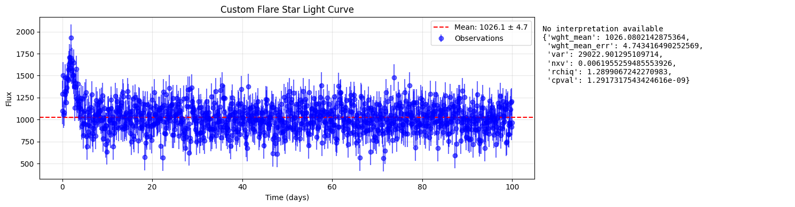
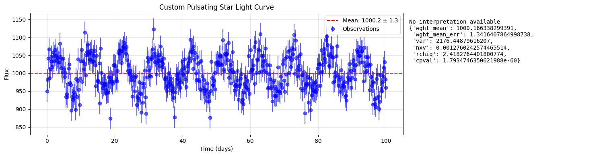

Variability Statistics¶
This tutorial showcases VASCA’s main statistics computation (get_var_stat) based
on synthetic data. The simple simulation framework allows for the variation of data
points, flux uncertainties, number of flare events as well as intrinsic variability
parameters like amplitude and period.
from dataclasses import dataclass
from pprint import pformat
import matplotlib.pyplot as plt
import numpy as np
import pandas as pd
from matplotlib.gridspec import GridSpec
from scipy.stats import chi2
def get_var_stat(vals: list[float], vals_err: list[float]) -> dict[str, float]:
"""
Calculate variability parameters for a set of measurements
Parameters
----------
vals: array-like
Variable values (e.g., flux measurements)
vals_err: array-like
Variable errors (uncertainties in measurements)
Returns
-------
dict
Dictionary containing variability statistics:
- wght_mean: Weighted mean of the measurements
- wght_mean_err: Error in the weighted mean
- var: Sample variance
- nxv: Normalized excess variance
- rchiq: Reduced chi-square statistic
- cpval: Chi-square p-value
"""
vals = np.array(vals)
vals_err = np.array(vals_err)
rr = {}
wght = 1.0 / vals_err**2
rr["wght_mean"] = np.average(vals, weights=wght)
rr["wght_mean_err"] = np.sqrt(1.0 / np.sum(wght))
chiq_el = np.power(vals - rr["wght_mean"], 2) / np.power(vals_err, 2)
chiq = np.sum(chiq_el)
nr_vals = len(vals)
if nr_vals > 1:
rr["var"] = np.var(vals, ddof=1)
rr["nxv"] = (rr["var"] - np.mean(vals_err**2)) / (
rr["wght_mean"] * rr["wght_mean"]
)
rr["rchiq"] = chiq / (nr_vals - 1)
rr["cpval"] = chi2.sf(chiq, nr_vals - 1)
else:
rr["var"] = rr["nxv"] = -100
rr["rchiq"] = rr["cpval"] = -1.0
return rr
Synthetic Light Curves¶
@dataclass
class SimulationParams:
"""Parameters for stellar variability simulation"""
n_points: int = 50
base_flux: float = 1000.0
measurement_error_fraction: float = 0.05
# Periodic variation parameters
period: float | None = None
amplitude: float | None = None
# Flare parameters
n_flares: float | None = None
flare_amplitude: float | None = None
flare_decay: float | None = 0.5
# Trend parameters
slope: float | None = None
def simulate_stellar_light_curve(params: SimulationParams) -> tuple:
"""
General function to simulate various types of stellar light curves
Parameters
----------
params : SimulationParams
Configuration dataclass containing all simulation parameters
Returns
-------
tuple
(times, fluxes, flux_errors) arrays
"""
# Generate time array
times = np.linspace(0, 100, params.n_points)
# Initialize base flux and measurement errors
flux_errors = (
params.base_flux * params.measurement_error_fraction * np.ones(params.n_points)
)
fluxes = params.base_flux * np.ones(params.n_points)
# Add periodic variations if specified
if params.period is not None and params.amplitude is not None:
phase = 2 * np.pi * times / params.period
fluxes *= 1 + params.amplitude * np.sin(phase)
# Add flares if specified
if params.n_flares is not None and params.flare_amplitude is not None:
flare_indices = np.random.choice(
params.n_points, params.n_flares, replace=False
)
for idx in flare_indices:
flare_profile = params.flare_amplitude * np.exp(
-params.flare_decay * np.abs(times - times[idx])
)
fluxes += params.base_flux * flare_profile
# Add linear trend if specified
if params.slope is not None:
fluxes += params.slope * times
# Add measurement noise
fluxes += np.random.normal(0, flux_errors)
return times, fluxes, flux_errors
# Predefined scenario configurations
SCENARIOS = {
"Quiet Star": SimulationParams(measurement_error_fraction=0.05),
"Pulsating Star": SimulationParams(
period=15, amplitude=0.20, measurement_error_fraction=0.03
),
"Flare Star": SimulationParams(
n_flares=3,
flare_amplitude=4.0,
measurement_error_fraction=0.04,
flare_decay=0.5,
),
"Low-Amplitude Variable": SimulationParams(
period=25, amplitude=0.03, measurement_error_fraction=0.01
),
"Noisy Variable": SimulationParams(
period=20, amplitude=0.15, measurement_error_fraction=0.10
),
"Secular Trend": SimulationParams(slope=-1.0, measurement_error_fraction=0.03),
}
def create_custom_scenario(scenario_type: str, **kwargs) -> SimulationParams:
"""
Create a custom scenario by modifying default parameters
Parameters
----------
scenario_type : str
Name of the base scenario to modify
**kwargs : dict
Parameters to override from the base scenario
Returns
-------
SimulationParams
Modified simulation parameters
"""
if scenario_type not in SCENARIOS:
msg: str = f"Unknown scenario type: {scenario_type}"
raise ValueError(msg)
# Create new params based on the scenario
base_params = SCENARIOS[scenario_type]
# Create a new instance with updated parameters
param_dict = {k: v for k, v in base_params.__dict__.items()}
param_dict.update(kwargs)
return SimulationParams(**param_dict)
Visualization¶
@dataclass
class AnalysisResult:
"""Container for analysis results of a scenario"""
scenario_name: str
times: np.ndarray
fluxes: np.ndarray
errors: np.ndarray
stats: dict
interpretation: str
def analyze_scenario(scenario_name: str, params: SimulationParams) -> AnalysisResult:
"""
Analyze a single scenario and provide interpretation
"""
# Generate data
times, fluxes, errors = simulate_stellar_light_curve(params)
# Calculate statistics
stats = get_var_stat(fluxes, errors)
# Generate interpretation based on statistics
interpretation = interpret_statistics(scenario_name, stats)
return AnalysisResult(
scenario_name=scenario_name,
times=times,
fluxes=fluxes,
errors=errors,
stats=stats,
interpretation=interpretation,
)
def interpret_statistics(scenario_name: str, stats: dict) -> str:
"""
Generate human-readable interpretation of the statistics
"""
interpretations = {
"Quiet Star": f"Non-variable star showing noise-dominated behavior:\n"
f"• Excess variance ({stats['nxv']:.3f}) near zero as expected\n"
f"• Reduced χ² ({stats['rchiq']:.2f}) ≈ 1 indicates good fit to constant flux\n"
f"• High p-value ({stats['cpval']:.2e}) suggests no significant variability",
"Pulsating Star": f"Clear periodic variability detected:\n"
f"• Strong excess variance ({stats['nxv']:.3f}) indicates intrinsic variation\n"
f"• High reduced χ² ({stats['rchiq']:.2f}) confirms deviation from constant flux\n"
f"• Very low p-value ({stats['cpval']:.2e}) shows high significance",
"Flare Star": f"Episodic flare behavior detected:\n"
f"• Extreme excess variance ({stats['nxv']:.3f}) due to flare events\n"
f"• Very high reduced χ² ({stats['rchiq']:.2f}) from strong flux excursions\n"
f"• P-value ({stats['cpval']:.2e}) indicates definite variability",
"Low-Amplitude Variable": f"Subtle variability detected due to precise measurements:\n"
f"• Moderate excess variance ({stats['nxv']:.3f}) despite low amplitude\n"
f"• Reduced χ² ({stats['rchiq']:.2f}) shows clear detection\n"
f"• Low p-value ({stats['cpval']:.2e}) confirms significance",
"Noisy Variable": f"Variability partially masked by measurement errors:\n"
f"• Modest excess variance ({stats['nxv']:.3f}) due to noise\n"
f"• Reduced χ² ({stats['rchiq']:.2f}) near detection threshold\n"
f"• Marginal p-value ({stats['cpval']:.2e}) suggests weak detection",
"Secular Trend": f"Systematic brightness change detected:\n"
f"• High excess variance ({stats['nxv']:.3f}) from trend\n"
f"• Large reduced χ² ({stats['rchiq']:.2f}) indicates non-constant flux\n"
f"• Very low p-value ({stats['cpval']:.2e}) confirms trend significance",
}
return interpretations.get(
scenario_name,
f"No interpretation available\n{pformat(stats, sort_dicts=False)}",
)
def visualize_results(
results: list[AnalysisResult], save_path: str | None = None
) -> pd.DataFrame:
"""
Create comprehensive visualization of all scenarios
"""
n_scenarios = len(results)
fig = plt.figure(figsize=(15, 4 * n_scenarios))
gs = GridSpec(n_scenarios, 2, width_ratios=[2, 1])
# Create summary dataframe for statistics
summary_data = []
for i, result in enumerate(results):
# Light curve plot
ax1 = fig.add_subplot(gs[i, 0])
ax1.errorbar(
result.times,
result.fluxes,
yerr=result.errors,
fmt="o",
color="blue",
alpha=0.6,
label="Observations",
)
ax1.axhline(
y=result.stats["wght_mean"],
color="r",
linestyle="--",
label=f'Mean: {result.stats["wght_mean"]:.1f} ± {result.stats["wght_mean_err"]:.1f}',
)
ax1.fill_between(
result.times,
result.stats["wght_mean"] - result.stats["wght_mean_err"],
result.stats["wght_mean"] + result.stats["wght_mean_err"],
color="r",
alpha=0.2,
)
ax1.set_xlabel("Time (days)")
ax1.set_ylabel("Flux")
ax1.set_title(f"{result.scenario_name} Light Curve")
ax1.grid(True, alpha=0.3)
ax1.legend()
# Statistics and interpretation text
ax2 = fig.add_subplot(gs[i, 1])
ax2.axis("off")
ax2.text(
0,
0.95,
result.interpretation,
verticalalignment="top",
fontfamily="monospace",
wrap=True,
)
# Collect summary statistics
summary_data.append(
{
"Scenario": result.scenario_name,
"Weighted Mean": f"{result.stats['wght_mean']:.1f}±{result.stats['wght_mean_err']:.1f}",
"Excess Variance": f"{result.stats['nxv']:.3f}",
"Reduced χ²": f"{result.stats['rchiq']:.2f}",
"P-value": f"{result.stats['cpval']:.2e}",
}
)
plt.tight_layout()
if save_path:
plt.savefig(save_path, bbox_inches="tight", dpi=300)
return pd.DataFrame(summary_data)
# Analyze all predefined scenarios
np.random.seed(42) # For reproducibility
results = []
for scenario_name, params in SCENARIOS.items():
results.append(analyze_scenario(scenario_name, params))
# Visualize and get summary
summary_df = visualize_results(results)
# Display summary table
print("\nVariability Analysis Summary:")
print(summary_df.to_string(index=False))
Variability Analysis Summary:
Scenario Weighted Mean Excess Variance Reduced χ² P-value
Quiet Star 988.7±7.1 -0.000 0.87 7.24e-01
Pulsating Star 1005.4±4.2 0.021 24.09 5.54e-215
Flare Star 1509.7±5.7 0.577 822.93 0.00e+00
Low-Amplitude Variable 998.2±1.4 0.000 5.31 1.56e-30
Noisy Variable 1014.4±14.1 0.015 2.54 1.60e-08
Secular Trend 949.1±4.2 0.001 2.43 8.91e-08
# Example of custom scenario analysis
name = "Flare Star"
custom_params = create_custom_scenario(
name,
n_points=1000,
n_flares=1,
flare_amplitude=0.75,
measurement_error_fraction=0.15,
flare_decay=1,
)
custom_result = analyze_scenario(f"Custom {name}", custom_params)
custom_summary = visualize_results([custom_result])

# Example of custom scenario analysis
name = "Pulsating Star"
custom_params = create_custom_scenario(
name, n_points=500, period=10, amplitude=0.05, measurement_error_fraction=0.03
)
custom_result = analyze_scenario(f"Custom {name}", custom_params)
custom_summary = visualize_results([custom_result])
